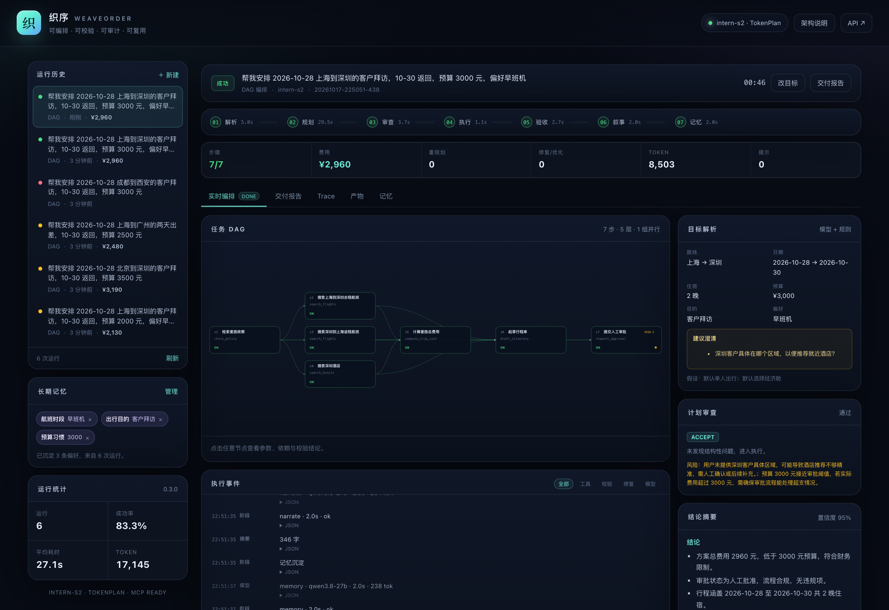
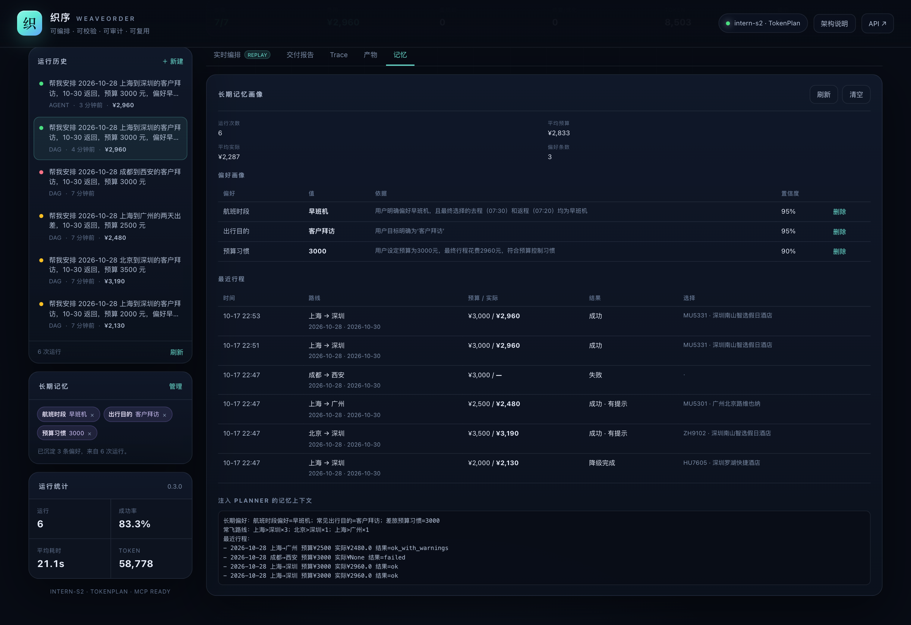
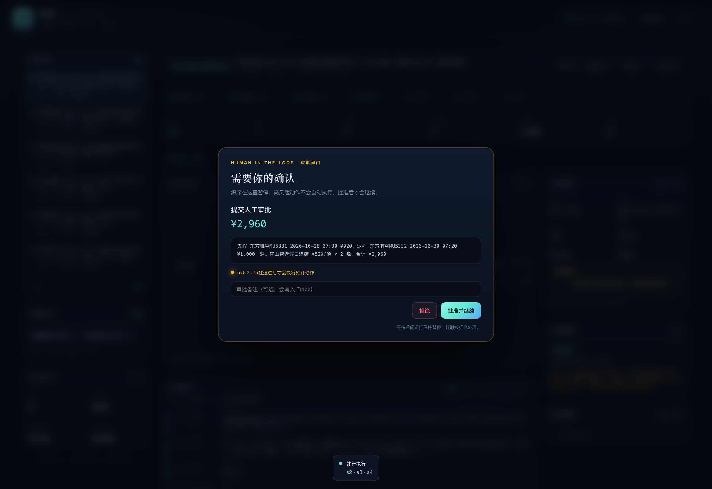
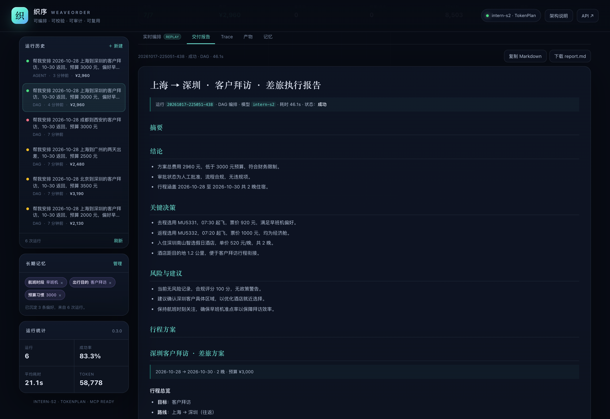
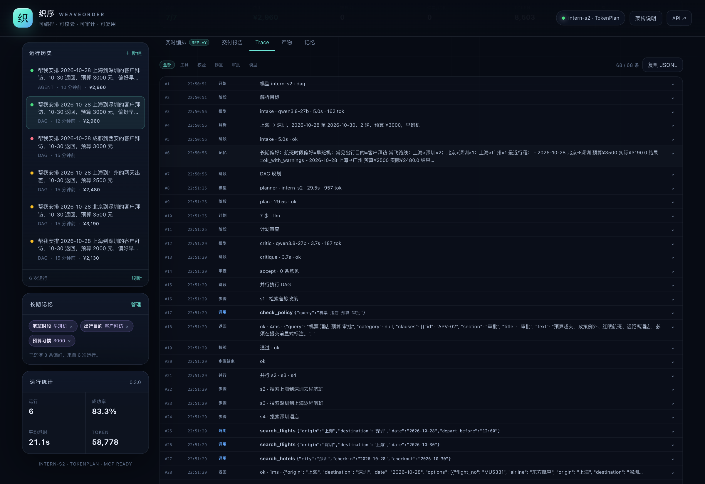
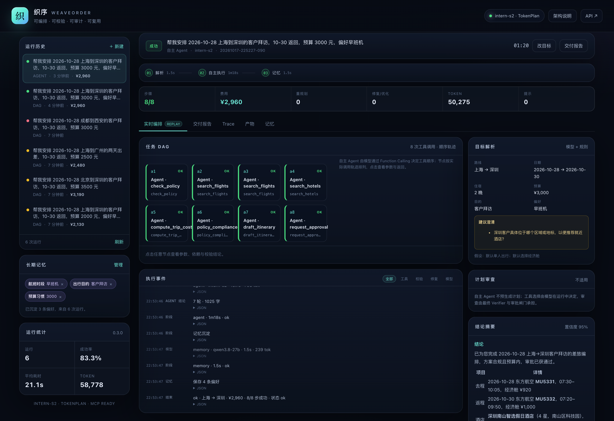

不是再做一个聊天机器人，而是做一个任务编排层：模型负责理解、选择与解释，引擎负责依赖、状态、校验、恢复和审计。底层模型可以替换，编排能力仍然成立。
| 官方要求 | v0.3 实现 | 可验证证据 |
|---|---|---|
| 基于书生大模型 | Intern-S2 TokenPlan，OpenAI 兼容；角色化模型路由 | core/llm.py、/api/models、Live 评测 |
| 任务自主规划 | Planner + Critic + DAG 静态校验 + Replanner | plan.json、plan.replan-*.json、Trace |
| 工具调用 | 9 个工具；JSON Schema 校验/纠偏、超时、只读重试、风险等级 | /api/tools、tool_call/tool_result |
| 多步推理 | Blackboard 结果引用、并行调度、数值/政策/完整性校验 | DAG、Verifier、交付报告 |
| 多智能体协同 | Intake / Planner / Critic / Executor / Verifier / Replanner / Narrator / Memory | core/agents.py、阶段事件 |
| 上下文工程 | 压缩工具描述、结果摘要、记忆上下文、失败上下文 | engine.py 中的 prompt 组装 |
| 长周期记忆 | 偏好画像 + 历史行程 + 白名单校验 + UI 管理 | memory/、/api/memory |
| MCP / Agent Skills | stdio JSON-RPC MCP server；SKILL.md | mcp_server.py、skills/ |
差旅天然包含预算、政策、日期、偏好、审批与失败恢复：它既有真实业务约束，又能让“规划—调用—校验—重规划—审批—报告”完整跑通。织序的内核并不绑定差旅：工具注册表、DAG 调度、Verifier 与 Memory 都可以迁移到采购、报销、运维等任务。
所有状态都是事件：界面看到的、Trace 记录的、报告引用的，来自同一条 EventBus。运行可以在任意时刻被观察、暂停和审计。
Planner 先产出带 depends_on 的步骤；Critic 预审；Executor 按层并行；Verifier 做确定性校验；失败时 Replanner 改写未完成部分。适合需要审计和确定性的业务。
把 9 个工具的 JSON Schema 直接交给模型，通过原生 Function Calling 自主选择工具；审批闸门、Trace、报告与 DAG 模式共用。适合探索性任务与开放赋能场景。
| 角色 | 输入 | 输出 | 设计意图 |
|---|---|---|---|
| Intake | 一句话目标 | 结构化约束 + 问题 + 假设 | 规则先解析硬约束，模型只补软偏好；模型不能覆盖日期/城市/预算 |
| Planner | 约束、工具、记忆 | 7 步 DAG JSON | 严格字段名 + 引用格式；一次结构修复；规则兜底 |
| Critic | 计划、政策阈值 | accept/revise + issues | 执行前发现方向写反、缺步骤、引用错误 |
| Executor | 分层 DAG | 工具结果 + 并行批次 | 同层并发、引用解析、超时、风险闸门 |
| Verifier | 行程草案 | 确定性校验 + 语义验收 | 数字一致、政策带编号、冲突显式 |
| Replanner | 失败原因 + 已完成结果 | 修订计划 | 保留已完成事实，只改未完成部分；最多 2 轮 |
| Narrator / Memory | 事实、指标、指标历史 | 可交付摘要 / 偏好画像 | 报告可读，经验可复用 |
$s2.best.price 引用 Blackboard 中的结果，Planner 只需知道字段形状。{
"goal": "安排上海到深圳的客户拜访",
"assumptions": ["2 晚", "预算 3000", "偏好早班"],
"steps": [
{"id":"s1","goal":"检索差旅政策","tool":"check_policy",
"args":{"query":"机票 酒店 预算 审批"},"depends_on":[],"success":"至少 1 条","risk":0},
{"id":"s5","goal":"计算往返总费用","tool":"compute_trip_cost",
"args":{"outbound_price":"$s2.best.price","return_price":"$s3.best.price",
"hotel_price":"$s4.best.price","nights":2,"budget":3000},
"depends_on":["s2","s3","s4"],"success":"总费用 ≤ 预算","risk":0}
]
}
模型经常会把往返方向写反。v0.3 增加 normalize_travel_plan：按日期、目标文本与已有城市自动纠正方向，并在 Trace 中记录 plan_normalized，而不是把错误带进执行。
risk：0 只读、1 低风险写入、2 预订/付款/发送、3 不可逆。风险 ≥ 2 必须在审批闸门暂停。航班空结果 → 移除过严的价格/时段过滤；酒店空结果 → 放宽价格/星级/距离；行程缺段 → 用已确认结果重建。
在往返航班 × 酒店的组合中，优先选“预算内 + 政策惩罚最小”的方案；若无解，选最接近预算的方案并降级 + 审批。
步骤内修复无效时，把失败原因、已完成摘要与政策阈值交给模型重写计划；结果必须再次通过静态校验，最多 2 轮。
预算 2000 元的用例中，最便宜组合仍需 2130 元。织序不会伪造一个“在预算内”的数字，也不会直接报错退出，而是：保留最接近预算的方案 → 标注红眼/远距离/超支 → 状态降级 → 仍然进入人工审批。审批人看到的是完整冲突，而不是一个漂亮但错误的结论。
| 场景 | 触发 | 恢复动作 | 最终状态 |
|---|---|---|---|
| 航班空结果 | 注入 max_price=500 | 移除过滤后重新检索 | ok · 修复 1 次 |
| 预算无解 | 总费用 2130 > 预算 2000 | 组合优化 → 降级 + 审批 | degraded · 4 条冲突 |
| 不可达城市 | 成都→西安无数据 | 不编造；尝试重规划后仍无解 | failed · 保留覆盖城市说明 |
| 往返方向写反 | Planner 把返程写成上海→深圳 | normalize_travel_plan 自动纠正 | ok · Trace 记录变更 |
工具是智能体与真实世界之间唯一的写入口。参数先校验再执行，风险先分级再审批，结论先引用再输出。
| 工具 | 风险 | 返回 / 约束 |
|---|---|---|
check_policy | 0 | 带编号的政策条款、阈值、引用；同 section 最多 2 条，避免证据偏科 |
search_flights | 0 | options / cheapest / best / coverage；只返回数据源真实覆盖的城市对 |
search_hotels | 0 | options / cheapest / best / nights；含距离、星级、退改、含早 |
compute_trip_cost | 0 | 去程 + 返程 + 酒店×晚数 + 市内交通；返回分项、total、预算差额 |
draft_itinerary | 0 | 行程单 markdown + summary + compliance + facts |
policy_compliance | 0 | 确定性合规检查：价格、时段、距离、晚数、预算 |
request_approval | 2 | 审批闸门通过后返回 approved；工具本身不执行下单/付款 |
get/save_travel_preference | 0 / 1 | 长期记忆读写；白名单 + 敏感信息过滤 |
注册表按 JSON Schema 检查必填、类型、枚举、默认值；同时容忍模型常见错误："2" → 2、"经济舱" → economy、多给字段自动忽略、字符串 JSON 自动解析。校验失败会返回明确错误，而不是把脏参数传给业务函数。
| 规则 | 阈值 | 条款 |
|---|---|---|
| 单程机票上限 | ¥1800 | FLT-03 |
| 酒店上限 | 一线 ¥600 / 华南 ¥550 | HTL-01 |
| 酒店距离 | ≤ 3 km | HTL-02 |
| 连续住宿 | > 3 晚需说明 | HTL-03 |
| 总费用审批线 | > ¥3000 | APV-01 |
| 红眼时段 | < 07:00 或 ≥ 21:00 | FLT-05 |
所有合规结论都带政策编号；报告中的 [FLT-03] 可以回查到 data/policy.md 与 check_policy 的工具返回。
跨运行保存常驻城市、酒店品牌、酒店预算、航司、座位、到达时间、是否避免红眼等偏好。每条都带 evidence（用户原话或选择行为）、confidence、更新时间与来源（规则/模型/用户）。
每次运行记录路线、日期、预算、实际费用、选择、状态与风险摘要。最近 3 条作为上下文注入 Planner，常飞路线用于提示。
长期偏好：酒店品牌偏好=亚朵；预算习惯=2800；避免红眼=是 常飞路线：上海>深圳×4；北京>深圳×1 最近行程： - 2026-10-28 上海→深圳 预算¥3000 实际¥2960 结果=ok - 2026-10-28 上海→广州 预算¥2500 实际¥2480 结果=ok
Planner 因此会优先在同一品牌/价位内选择，而不是每次从零开始。
差旅偏好是结构化且低基数的，结构化文件 + 白名单比向量检索更可解释、更易审计，也避免把敏感文本写进索引。数据量上来后再替换存储层，不影响接口。

v0.2 的 Web 请求会阻塞 1–2 分钟；v0.3 改为 SSE：阶段、token、工具调用、校验、审批实时到达，运行中的每一步都能被看见和干预。



Mock 用于确定性回归；Live 用于验证书生模型的规划、工具调用、重规划与审批。两者共用同一套 Orchestrator 与 Trace。

| 用例 | 场景 | 状态 | 费用 | 关键验证 |
|---|---|---|---|---|
| T01 | 标准差旅 | ok | ¥2960 | 往返 + 2 晚，全部步骤成功 |
| T02 | 预算 2000 | degraded | ¥2130 | 降级 + 4 条冲突 + 审批 |
| T03 | 注入航班空结果 | ok | ¥2960 | 步骤内修复 1 次 |
| T04 | 北京出发 | ok_with_warnings | ¥3190 | 换路线，不硬编码 |
| T05 | 广州，预算 2500 | ok_with_warnings | ¥2480 | 预算优化 + 不可退改/距离提示 |
| T06 | 缺日期 | ok | ¥2960 | 默认值 + 假设说明 |
| T07 | 中文日期 | ok | ¥2960 | 10月28日/10月30日解析 |
| T08 | 预算 1500 | degraded | ¥2130 | 无解时降级而非静默失败 |
| T09 | 成都→西安 | failed | — | 数据源不覆盖，不编造 |
| T10 | 1 晚 | ok | ¥2350 | 费用按 1 晚计算 |
| T11 | 4 晚驻场 | ok_with_warnings | ¥4000 | 住宿时长/酒店标准提示 |
| T12 | 深圳→上海 | ok_with_warnings | ¥3200 | 反向路线验证 |
| 模型 | 用例 | 结果 | 费用 | 耗时 | 说明 |
|---|---|---|---|---|---|
| Intern-S2 + Qwen 路由 | T01 | PASS | ¥2960 | 50.3s | 7/7 步、7,034 tokens、往返方向自动纠正、人工审批 |
| Intern-S2 + Qwen 路由 | T13 Agent | PASS | ¥2990 | 64.9s | 原生 Function Calling，9 次工具调用，49,781 tokens |
| Qwen 全快模型 | T01 / T02 / T09 / T13 | 4/4 | 2960 / 2290 / — / 2830 | 总 89s | 含降级、失败审计与 Agent 模式 |
Live 模式不要求与 Mock 同价；只要求方案可交付、预算内、冲突显式、Trace 完整。Intern-S2 的 reasoning 会消耗较多 token，v0.3 对结构化任务关闭 thinking，速度提升显著。截图与表格来自不同轮次的真实运行，模型延迟与 token 数会波动。
| 观察到的真实问题 | 修复 | 结果 |
|---|---|---|
规划输出 dag/action/params 而非 steps/tool/args | 严格 JSON 示例 + 字段适配 + Schema 校验 + 一次修复 | 7 步计划稳定可执行 |
| 返程写成上海→深圳 | normalize_travel_plan 按日期与目标纠正 | T01 往返正确 |
把 cabin 写成“经济舱”导致工具报错 | 枚举别名映射；工具异常进入重规划 | 不再因中文枚举失败 |
| reasoning 吃满 max_tokens，content 为空 | 自动关闭 thinking 并放大额度重试 | 空 content 率显著下降 |
| Critic/Verifier 把 mock 数据当“编造” | 明确“工具返回即事实”；只在 ok=false 时降级 | 标准差旅回到 ok，审查建议仍保留 |
| 预算无解时直接失败 | 预算优化器 + 降级 + 审批 | 用户拿到最接近预算的方案 |
| Replanner 用“估算价 800”伪造可交付方案 | 价格参数必须是 $sN 引用，禁止常量 | T09 干净失败，不产出假费用 |
weaveorder/ ├── agent.py # CLI + 兼容导出 ├── core/ │ ├── config.py # 环境/模型路由/代理修复 │ ├── events.py # EventBus / SSE │ ├── llm.py # 书生客户端 │ ├── intake.py # 目标解析 │ ├── plan.py # DAG / 引用 / 方向纠正 │ ├── catalog.py # 确定性数据源 │ ├── policy.py # 检索 + 合规规则 │ ├── tools.py # 9 个类型化工具 │ ├── memory.py # 偏好 + 历史 │ ├── agents.py # 7 角色 │ ├── engine.py # 并行 DAG / 审批 / Agent │ └── report.py # 交付报告 ├── app/ # FastAPI + 单页控制台 ├── eval/ # 12 条回归 + Live 评测 ├── skills/ # Agent Skill ├── mcp_server.py # stdio MCP └── docs/ # 报告 / 截图 / 脚本
cd weaveorder python3 -m venv .venv source .venv/bin/activate pip install -r requirements.txt # 离线 python agent.py --mock --yes "帮我安排 2026-10-28 上海到深圳的客户拜访，10-30 返回，预算 3000 元" # 真实模型 cp .env.example .env # 填入 INTERN_API_KEY set -a; source .env; set +a python agent.py --yes "..." python agent.py --yes --mode agent "..." # Web .venv/bin/uvicorn app.server:app --host 127.0.0.1 --port 8000 # 评测 .venv/bin/python eval/run_eval.py --mode mock .venv/bin/python eval/run_eval.py --mode live --limit 4
plan.initial.json、plan.json、plan.replan-*.json、trace.jsonl、result.json、report.md。每个运行目录都可独立回放。
# 结构化任务关闭思考，速度从分钟级降到秒级
extra_body = {"thinking": {"type": "disabled"}}
# 角色路由：主模型负责规划/审查，轻量模型负责抽取
INTERN_MODEL=intern-s2
INTERN_FAST_MODEL=qwen3.8-27b
INTERN_INTAKE_MODEL=fast
INTERN_VERIFIER_MODEL=fast
INTERN_MEMORY_MODEL=fast
另外修复了 httpx 0.28 对 NO_PROXY=[::1] 的解析崩溃：启动时清理方括号 IPv6 条目，保留其余代理设置，避免“本地有代理就完全连不上”的环境问题。
织序 v0.3 的核心不是“让模型更会聊天”，而是把模型放进一个有依赖、有校验、有恢复、有审批、有记忆的编排系统里。它用确定性守住业务底线，用多智能体提升自适应能力，用 EventBus 把每一步变成可观察、可审计的事实。
报告版本：v0.3.0 · 2026-10 · 所有截图与数字来自本地运行。